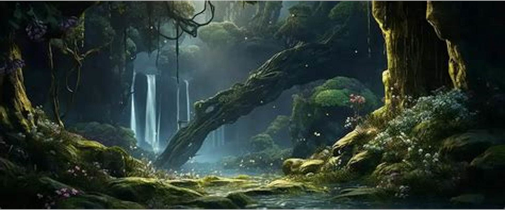

Bem Vindo Passante
E você abriu os olhos
Sim, você morreu, mas ainda está com os olhos abertos; está ciente do que ocorre e o tempo ainda passa. Nós temos algo à te contar, antes do ciclo retornar, antes da sua próxima escolha.
Algumas perguntas?
Você já pensou no que seria a morte? Agora que está aqui, qual das milhares de interpretações estava certa? E se não houvesse resposta correta?
Já se perguntou porque você escolheu viver ou por que viveu? Se você morreu quer dizer que o propósito foi concluído e não há mais à onde seguir? Mas quantas escolhas ainda te resta para fazer?
Você já se perguntou se esta é a nossa primeira conversa? Quantas vezes já não ouviu nossas vozes? Em quantos momentos não já viu nossas máscaras? Mas quantas delas eram o nosso rosto?